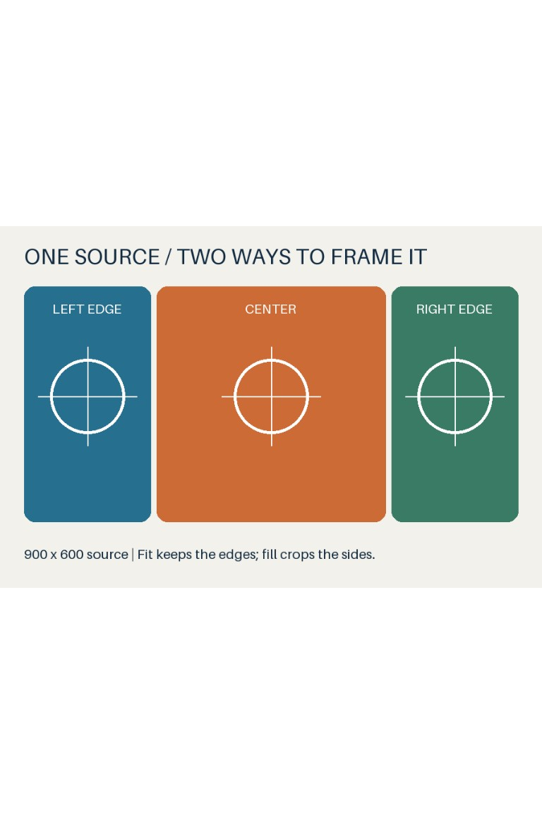
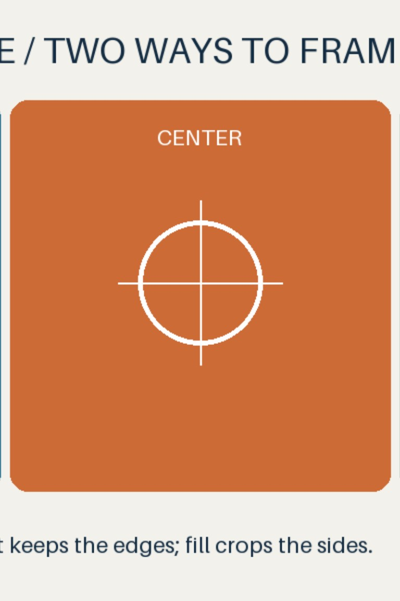

Selected: FILL · JPEG quality 90 · 4:2:0 · 768 × 1152
Both previews show decoded JPEG pixels. Fit keeps the whole image with white padding; fill centers and crops it to cover the canvas. These are digital previews, not a prediction of paper color or edge trimming.


Selected JPEG · Selected decoded preview · Selected pixels before JPEG compression · Preparation details
Everything was prepared locally. Nothing was sent to a printer.